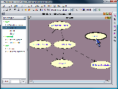
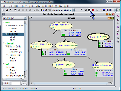

The SamIam program provides two modes for working with Bayesian belief networks: Edit Mode and Query Mode. In general, a user will accomplish structural modifications to a network in Edit Mode, whereas he will use SamIam to compute the answers to queries in Query Mode. In fact, SamIam enforces that structural modifications can take place exclusively in Edit Mode. Also, some types of queries that SamIam supports are available only in Query mode, for example, using Monitor windows to view the posterior probabilities. Other types of queries, such as those calculated using The Recursive Conditioning Tool, are available in either Edit Mode or Query Mode. However, if the user initiates a network modification while running a Recursive Conditioning Tool computation, SamIam will cancel the computation automatically.
 |
 |
Transfer between modes by selecting the appropriate menu item from the "Mode" menu or by clicking the mode transition button on the tool bar. SamIam indicates the operating mode in the window title for each open network.
When transitioning into Query Mode, in order to enable
it to compute the answers to the types of queries available in that mode, SamIam
will compile the network if necessary. A special case of this situation is when
the user initially opens a belief network from a file and transitions into Query
Mode for the first time. After that, the program will recompile the network
only if the user makes structural modifications to the network and then enters
Query Mode again.